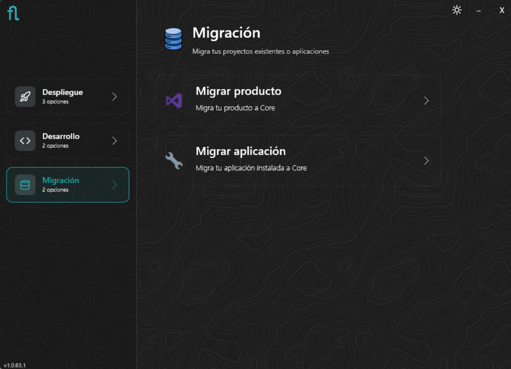
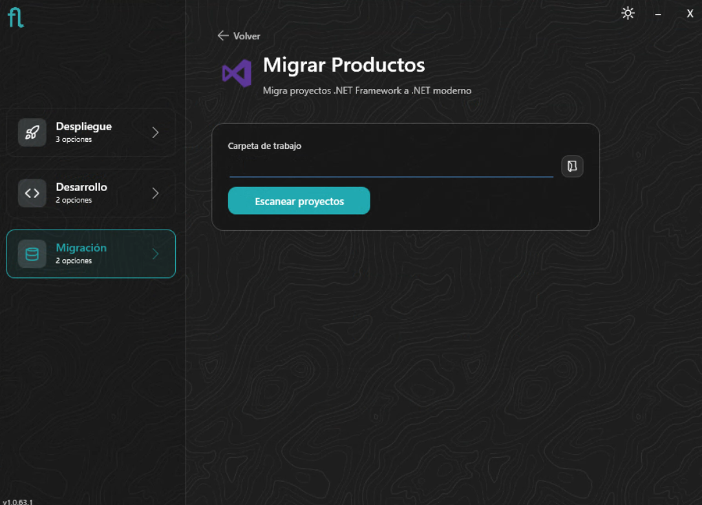
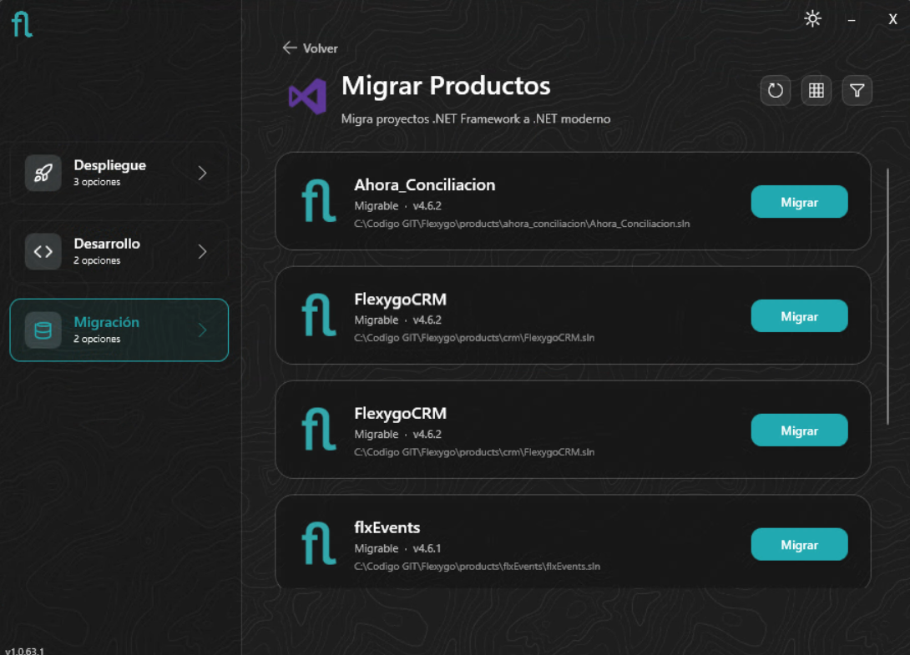
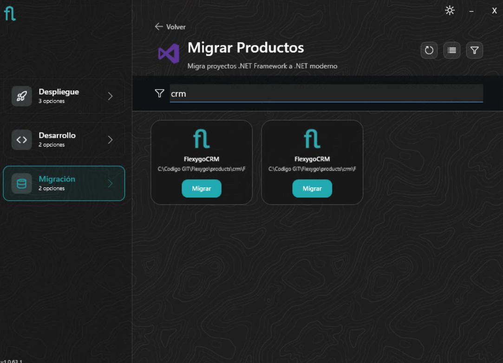
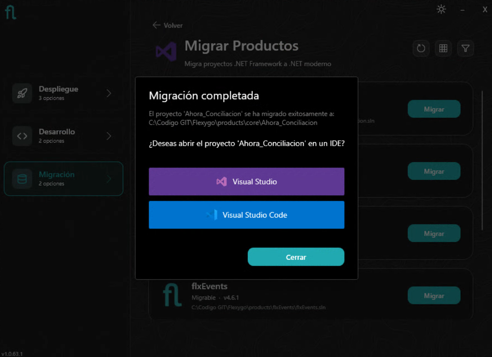
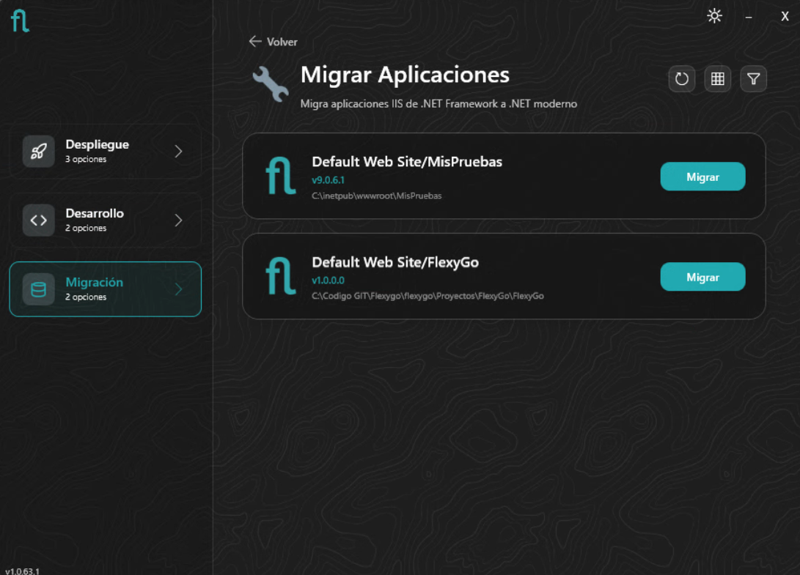
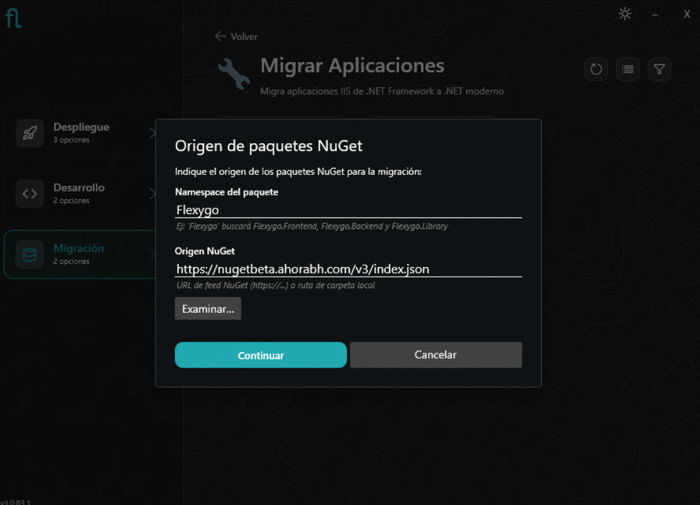
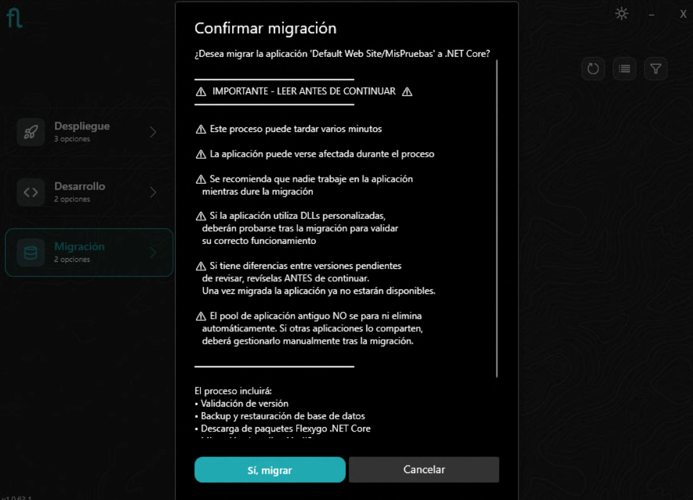
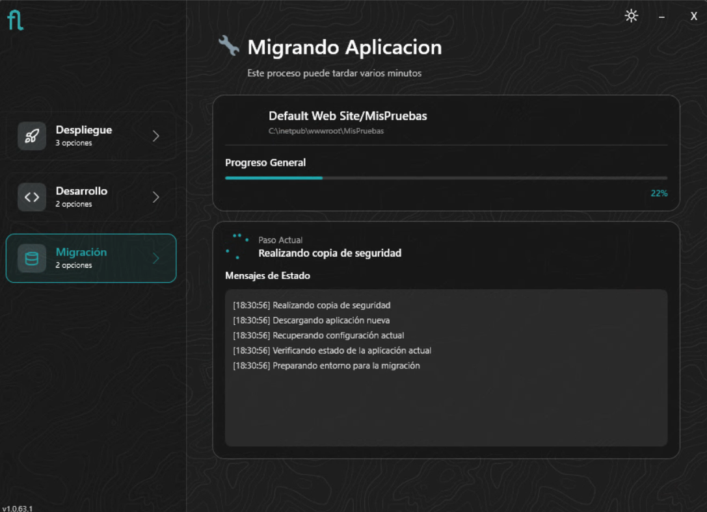
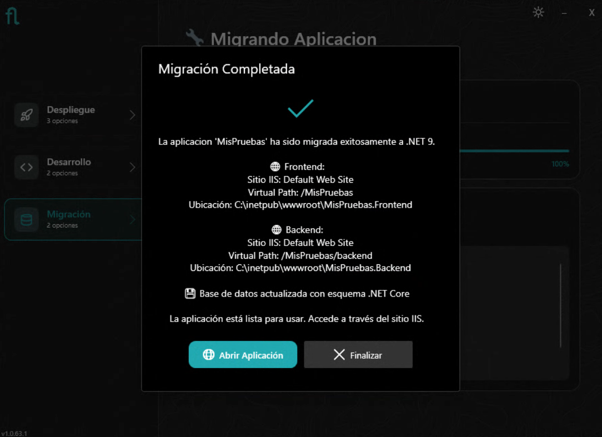

Docs
Docs
Instalador: Modo Migración
El modo Migración del instalador permite trasladar proyectos y aplicaciones de .NET Framework a .NET Core (Flexygo Core). Ofrece dos variantes según el punto de partida.
{kind=link}

Migrar proyectos de código
Esta opción escanea el workspace en busca de soluciones .NET Framework de Flexygo y permite migrarlas a la estructura de Flexygo Core (.NET moderno).
Carga del workspace
Indica la carpeta de trabajo donde se encuentran los proyectos y pulsa Escanear proyectos. El instalador analizará el workspace en busca de soluciones .NET Framework de Flexygo.
{kind=link}

Lista de productos
Los proyectos encontrados se muestran con su versión actual. Se puede alternar entre vista de lista y cuadrícula, y filtrar por nombre.
{kind=link}

{kind=link}

Migrar
Pulsa Migrar en el proyecto deseado. El instalador genera la nueva estructura de Flexygo Core a partir del proyecto existente.
Migración completada
Al finalizar, el instalador ofrece abrir el proyecto migrado directamente en Visual Studio o VS Code.
{kind=link}

Revisiones necesarias tras migrar el proyecto
Antes de compilar y probar el proyecto migrado, revisa los siguientes puntos:
Conf.Database
- Abre el proyecto
Conf.Databasey revisa el fichero de configuración y la integridad del script postdeploy migrado. - Revisa también los scripts de staticdata para asegurarte de que se han migrado correctamente y no contienen referencias obsoletas.
- Verifica también el fichero config.sql y comprueba su integridad. El migrador reemplaza automáticamente
AutoUpdatePackageIdporAutoUpdatePackageNamespaceen este fichero, pero si tienes este valor configurado en algún otro script deberás reemplazarlo manualmente.
Carpetas de artefactos antiguos
Elimina manualmente las carpetas Properties, obj y debug que puedan haber quedado de la solución anterior en los proyectos Frontend, Backend y Processes (si existe). Estas carpetas pueden contener assemblies de .NET Framework incompatibles con la nueva solución. Se volverán a generar correctamente al compilar.
Namespaces obsoletos en Processes
Si los Processes están escritos en C#, es posible que hagan uso de namespaces que ya no existen en .NET moderno. Los casos más habituales son:
| Namespace .NET Framework | Equivalente en .NET |
|---|---|
System.Web |
Microsoft.AspNetCore.Http |
System.Web.HttpContext |
Microsoft.AspNetCore.Http.HttpContext |
System.Web.HttpRequest |
Microsoft.AspNetCore.Http.HttpRequest |
System.Web.HttpResponse |
Microsoft.AspNetCore.Http.HttpResponse |
System.Web.HttpServerUtility |
Microsoft.AspNetCore.Hosting.IWebHostEnvironment |
System.Web.SessionState |
Microsoft.AspNetCore.Http.ISession |
Revisa los using de cada Process y sustituye los obsoletos por sus equivalentes. Si hay casos no contemplados en la tabla, consulta la guía oficial de migración de ASP.NET a ASP.NET Core.
Migrar aplicaciones IIS
Esta opción detecta las aplicaciones Flexygo de .NET Framework desplegadas en IIS y las migra a .NET Core en su lugar.
Aplicaciones encontradas
El instalador lista las aplicaciones IIS de Flexygo Framework detectadas en el sistema.
{kind=link}

Origen de paquetes NuGet
Antes de iniciar, el instalador solicita el namespace del producto y la URL del feed NuGet desde donde descargará los paquetes correspondientes a la aplicación que se pretenda migrar.
{kind=link}

Confirmación — Leer antes de continuar
El instalador muestra un diálogo de confirmación con advertencias importantes:
{kind=link}

Antes de confirmar, ten en cuenta:
- El proceso puede tardar varios minutos
- La aplicación puede verse afectada durante el proceso — se recomienda que nadie trabaje en ella mientras dure la migración
- Si la aplicación utiliza DLLs personalizadas, deberán probarse tras la migración para validar su correcto funcionamiento
- Si tienes diferencias entre versiones pendientes de revisar, hazlo antes de continuar — una vez migrada la aplicación ya no estarán disponibles
- El Application Pool antiguo NO se para ni elimina automáticamente — si otras aplicaciones lo comparten, deberás gestionarlo manualmente tras la migración
El proceso incluirá: validación de versión, backup y restauración de base de datos, descarga de paquetes Flexygo .NET Core y actualización de la aplicación IIS.
Progreso
{kind=link}

Rollback automático en caso de error
Si se produce un error en cualquier punto del proceso, el instalador realiza un rollback automático y deja el sistema exactamente en el estado original. En ningún momento se elimina ni modifica nada de lo existente:
- Las carpetas de la aplicación se renombran como
OLD_<timestamp>— las originales permanecen intactas. - La base de datos de configuración se renombra igualmente como
OLD_<timestamp>. - Si existe base de datos de datos, también se renombra.
Siempre es posible retornar al estado anterior manualmente restaurando las carpetas y bases de datos renombradas.
Migración completada
Al finalizar, el instalador muestra un resumen con los sitios IIS creados (Frontend y Backend) y sus rutas físicas, confirma que la base de datos ha sido actualizada al esquema .NET Core, y ofrece abrir la aplicación directamente.
{kind=link}

Acciones necesarias tras la migración
- Licencia regenerada — la licencia se regenera automáticamente para mantener la misma licencia ya existente bajo la nueva tecnología. No es necesaria ninguna acción adicional.
- Todos los usuarios deberán iniciar sesión de nuevo — la migración invalida las sesiones activas.
- Recarga de caché del navegador recomendada — al mantenerse el mismo site e IIS puede que el navegador sirva archivos estáticos anteriores. Recarga con
Ctrl + Shift + Ro limpia la caché antes de usar la aplicación.
Siguientes pasos
El ciclo de despliegue y actualización es idéntico al de cualquier instalación Flexygo Core. Consulta las guías de Despliegue y Actualización para los siguientes pasos.